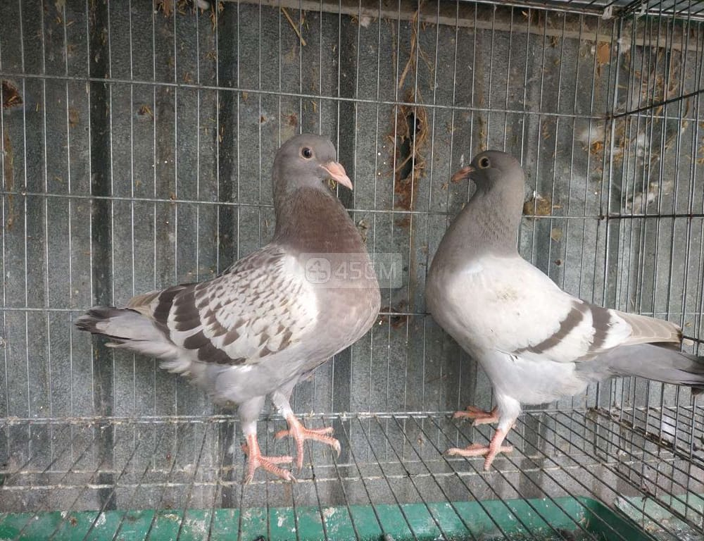
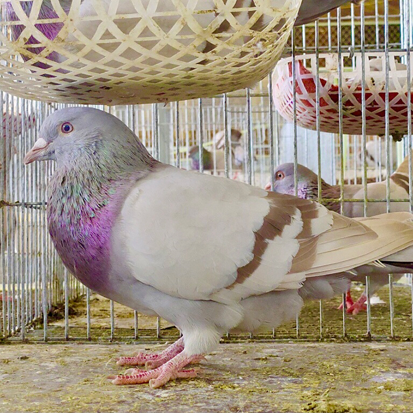

Bồ câu Titan Thái

Giống bồ câu nuôi thương phẩm từ Thái Lan
Giống Bồ câu Titan Thái Lan là giống bồ câu nuôi thương phẩm của Thái Lan được du nhập Việt Nam từ những năm gần đây (2018) được bà con chọn nuôi thương phẩm bởi giống này có nhiều ưu điểm và phù hợp với môi trường khí hậu Việt Nam.
Tại sao chọn mô hình nuôi chim bồ câu?
Nuôi chim Bồ Câu được xem là mô hình chăn nuôi phù hợp với diện tích nhỏ. Kỹ thuật đơn giản, đầu tư chi phí ít, mau thu hồi vốn.
Tại sao lại chọn giống Titan Thái để nuôi thương phẩm?
Lý do chọn giống Bồ câu Titan Thái để nuôi thương phẩm bởi các ưu điểm sau: Con giống có trọng lượng to, dễ nuôi, đề kháng mạnh, sinh sản tốt.
Đặc điểm giống Bồ câu Titan Thái:
- Chân ngắn, vai nở
- Màu sắc lông: xám đá có 2 gạch ở cánh
- Chim mới nở có khối lượng trung bình 17 gram/con
- 28 ngày tuổi nặng 647 gram
- 6 tháng tuổi đạt 700 gram
- 1 năm tuổi đạt 800 gram
- Khả năng sản xuất của 1 cặp chim Titan Thái bố mẹ trong 1 năm được 20 – 30 chim non
- Thời gian trung bình giữa 2 lứa đẻ từ 30 ngày trở lên
Kỹ thuật nuôi chim Bồ câu Titan Thái
-
Kỹ thuật chọn giống chim bồ câu thái siêu thịt
Chim bồ câu được chọn làm giống phải đảm bảo các yêu cầu như chim khỏe mạnh, to con, lông mượt, lanh lợi, không có bệnh tật và dị tật và được tiêm vaccine đầy đủ.
-
Kỹ thuật làm Chuồng nuôi chim bồ câu thái siêu thịt
Yêu cầu đối với chuồng nuôi chim bồ câu là phải có độ sáng của ánh nắng mặt trời nhưng tránh nắng trực tiếp vào lồng nuôi chim, khô ráo, thoáng mát, sạch sẽ, yên tĩnh, tránh phiền nhiễu của mèo, chuột.

Các mô hình nuôi chim Bồ câu Titan Thái
Hiện có 3 mô hình bà con có thể lựa chọn để nuôi chim bồ câu, đó là:
- Mô hình chăn thả tự nhiên
- Mô hình nuôi bán công nghiệp
- Mô hình nuôi công nghiệp
Khi nuôi chim bồ câu kinh doanh, khuyến khích bà con lựa chọn nuôi theo mô hình bán công nghiệp và công nghiệp.